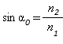
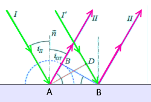
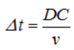
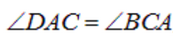
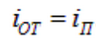
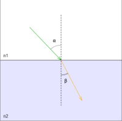
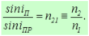

Дерябин Андрей
Факультет:
ПИиКТ
Группа:
P3210
Дисциплина:
Физика
Раздел:
Оптика
Преподаватель:
Афанасьева Т.В., кандидат технических наук
Физико-технический факультет
Описание опыта:
На экране изображены три луча: падающий (зеленый), отраженный (фиолетовый) и преломлённый (оранжевый). Угол падения можно изменять от 0 до 180 градусов.
Отраженный луч демонстрирует закон отражения света - угол падения равен углу отражения.
Преломлённый луч демонстрирует два закона. Первый - закон преломления:
 , где альфа - угол падения, гамма - угол преломления, n2 и n1 - показатели преломления среды.
, где альфа - угол падения, гамма - угол преломления, n2 и n1 - показатели преломления среды.Второй закон - закон полного отражения света. Полное отражение наблюдается только при переходе луча из более плотной среды в менее плотную и проявляется в том, что начиная с определенного угла падения отраженный луч исчезает. Предельный угол удовлетворяет следующему условию: 
Теория:
Корпускулярная теория очень просто объясняла явления геометрической оптики, описываемые в терминах распространения световых лучей. С точки зрения волновой теории, лучи — это нормали к фронту волны. Принцип Гюйгенса также позволяет объяснить законы геометрической оптики на основе волновых представлений о природе света.
Основу геометрической оптики составляют три закона:
1. Закон прямолинейного распространения света (в однородной среде).
2. Закон отражения.
3. Закон преломления света.
Закон отражения
При достижение границы раздела двух сред, изменяются направления распространения световых волн. Если они остаются в той же среде, то происходит отражение света.Отражение света — это изменение направления световой волны при падении на границу раздела двух сред, в результате чего волна продолжает распространяться в первой среде.
Закон отражения света: Падающий луч, и отраженный луч находятся в одной плоскости с нормалью к границе раздела двух сред, причем угол падения равен углу отражения
Видео: закон отражения и преломления (видео с канала "GetAClass - Физика в опытах и экспериментах" на YouTube).
Закон отражения может быть выведен из принципа Гюйгенса. Пусть плоская волна, распространяющаяся в изотропной среде, падает на границу раздела двух сред.

Применение принципа Гюйгенса к выводу закона отражения
Достаточно рассмотреть два параллельных луча I и в падающем пучке. Углом падения называют угол между нормалью п к поверхности раздела и падающим
лучом I. Плоский фронт AD падающей волны сначала достигнет границы раздела двух сред в точке А, которая станет источником вторичных волн. Согласно принципу Гюйгенса, из нее, как из центра, будет распространяться сферическая волна. Через время ,
то есть с запаздыванием во времени на дельта t, луч I' из падающего пучка придет в точку С, которая в этот момент времени (t + delta t) также станет источником вторичной волны. Но, к этому моменту вторичная сферическая волна, распространяющаяся из точки А, уже будет иметь радиус AB = v * delta t (как и должно быть: ). Мы знаем теперь положение двух точек фронта отраженной волны — С и В. Чтобы не загромождать рисунок, мы не показываем вторичных волн, испущенных точками между А и С, но линия CD будет касательной (огибающей) ко всем из них. Стало быть, CВ действительно является фронтом отраженной волны. Направление ее распространения (лучи II и II') ортогонально фронту CD. Из равенства треугольников ABC и ADC вытекает равенство углов , что, в свою очередь, приводит к закону отражения .Применение принципа Гюйгенса к выводу закона отражения
Закон преломления
Если световые волны достигают границы раздела двух сред и проникают в другую среду, то направление их распространения также изменяется — происходит преломление света.Преломление света — это изменение направления распространения световой волны при переходе из одной прозрачной среды в другую.

Преломление света на плоской границе раздела двух прозрачных сред
Преломление света на плоской границе раздела двух прозрачных сред
Закон преломления света (закон Снелла): Падающий и преломленный лучи находятся в одной плоскости с нормалью к границе раздела двух сред, причем отношение синуса угла падения к синусу угла преломления постоянно для данной пары сред и равно показателю преломления второй среды относительно первой

Здесь n2 - показатель преломления среды, в которой распространяется преломленная волна, n1 - показатель преломления среды, в которой распространяется падающая волна. Закон отражения также вытекает из принципа Гюйгенса.